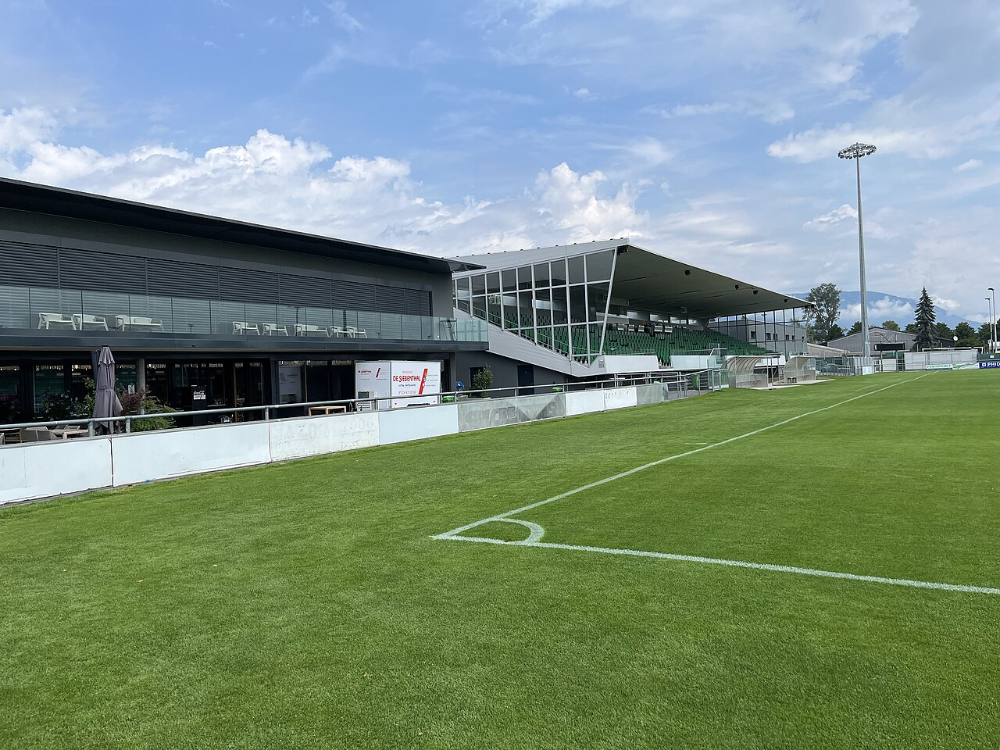

Ranjan Neelakandan: Schweizer Talent mit tamilischen Wurzeln kehrt nach Yverdon zurück
Der 21-jährige Angreifer aus dem Tessin wechselte im Januar 2026 leihweise vom FC Annecy zu Yverdon-Sport. Sein Weg vom Tessin über Frankreich zurück in die Schweiz.

Rückkehr in die Schweiz: Am 20. Januar 2026 wechselte Ranjan Neelakandan leihweise zu Yverdon-Sport. Der Klub gab bekannt, dass der Angreifer bis zum Saisonende vom französischen Zweitligisten FC Annecy ausgeliehen ist. Für die tamilische Community ist der 21-Jährige besonders interessant: Er wurde in der Schweiz geboren und hat über seine Eltern sri-lankisch-tamilische Wurzeln.
Geboren am 20. Januar 2005, begann Neelakandan seine Laufbahn im Tessin. Er spielte für Team Ticino, den FC Chiasso und die AC Bellinzona. Bei Chiasso stand er 2022 in zwei Ligaspielen auf dem Platz, ein Jahr später ging er zur U21 des FC Lugano.
Mehr Spielpraxis sammelte er in Bellinzona: Ab der Saison 2023/24 bestritt er dort dreiunddreißig Ligaspiele und erzielte zwei Tore. In der Challenge League lernte er den Profifußball kennen.
2025 wechselte Neelakandan zum FC Annecy in die Ligue 2. Der Anfang war zäh: Laut der Regionalzeitung Le Dauphiné kam er zunächst nur auf drei Spiele und 37 Minuten, sogar eine Ausleihe war im Gespräch.